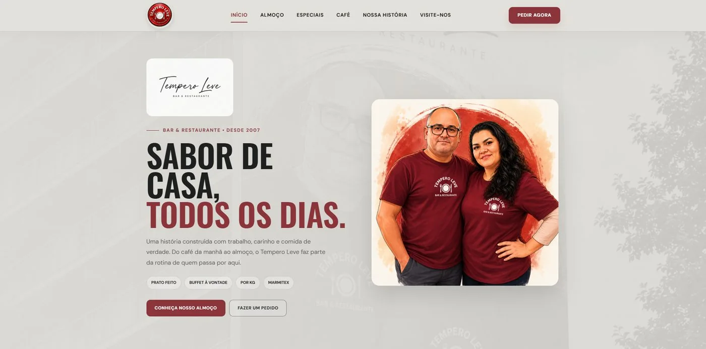
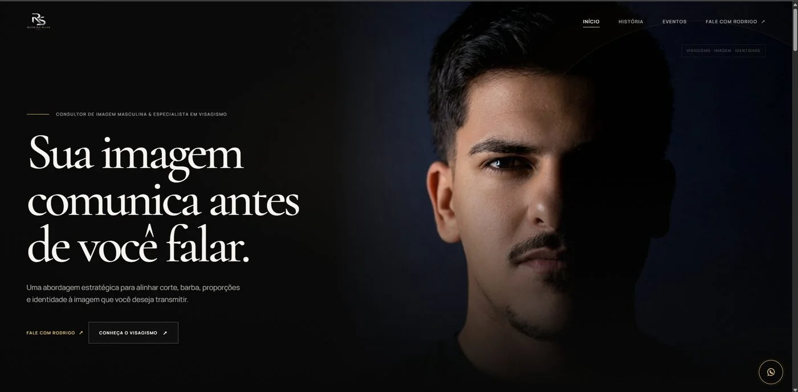

Sites com a sua cara
Sites que apresentam sua marca e transformam visitas em oportunidades reais de negócio.
DESIGN + TECNOLOGIA
A gente transforma suas ideias em sites e sistemas que fazem sentido para o seu negócio.
Como pensamos os projetos que assinamos.
Uma ideia sozinha é apenas um começo. A Zayro existe para transformar esse começo em algo concreto. Testamos, estruturamos, desenhamos e desenvolvemos até encontrar a forma certa para cada projeto.
Sem intermediáriosVocê fala direto com a gente, do começo ao fim.
Do seu jeitoA gente entende sua ideia antes de colocar a mão no código.
Trabalho de verdadeVeja um pouco do que já tiramos do papel.
Cada serviço existe para resolver um problema real, não para preencher um pacote fechado.
Sites que apresentam sua marca e transformam visitas em oportunidades reais de negócio.
Ferramentas criadas sob medida para processos que soluções prontas não resolvem.
Interfaces, apresentações e produtos digitais pensados para comunicar melhor o que você faz.
Tecnologia para reduzir tarefas repetitivas e tornar operações mais eficientes, com IA quando ela realmente agrega valor.
Dois projetos publicados. Duas necessidades diferentes. A mesma preocupação com detalhe.

Site institucional para um restaurante tradicional de Itapecerica da Serra.
Ver o projeto ↗
Experiência institucional para um consultor de imagem masculina e visagismo.
Ver o projeto ↗Cinco etapas, sempre as mesmas, para manter clareza do briefing até a entrega.
Conversamos sobre o problema, objetivo, público e contexto.
Organizamos as informações e definimos o caminho do projeto.
Transformamos estratégia em linguagem visual e experiência.
Construímos a solução com atenção aos detalhes e desempenho.
Publicamos, ajustamos e entregamos tudo pronto para continuar evoluindo.
Duas pessoas, uma amizade que vem da escola e a mesma aposta: transformar conhecimento técnico em negócio de verdade.
A Zayro começou muito antes de virar empresa. Começou em sala de aula, entre dois amigos que dividiam o mesmo sonho: um dia trabalhar com tecnologia e construir algo próprio.
Anos depois, chegou o momento de decidir. Era mais fácil seguir caminhos prontos, mas escolhemos apostar na amizade e no que sabíamos fazer. Trocamos a certeza por risco. Deu certo. E foi assim que nasceu a Zayro Studio.
Entender o problema antes de escolher a tecnologia.
Criar algo que tenha função e personalidade.
Transformar a ideia em algo que realmente funciona.
Nenhum projeto passa por equipe terceirizada ou mão de obra anônima. Cada entrega passa pelas duas pessoas que você vê aqui.
As dúvidas mais comuns de quem está avaliando fechar um projeto com a gente.
Não achou sua dúvida? Fale com a gente ↗Cada projeto possui necessidades diferentes. Depois de entender o escopo, apresentamos uma proposta adequada ao projeto.
Sim. A Zayro trabalha de forma 100% remota e pode atender projetos em qualquer lugar do Brasil ou do mundo.
Sim. Podemos continuar acompanhando o projeto após a entrega, realizando ajustes, melhorias e manutenção.
Claro. Muitas vezes o projeto começa justamente como uma ideia. A primeira conversa serve para entender o que pode ser construído.
Depende do escopo. Depois do briefing definimos um prazo realista junto com você, com etapas claras até a entrega.
Normalmente dividido em etapas, alinhado ao andamento do projeto. Os detalhes ficam combinados antes de começar.
Conte o que você tem em mente. A gente descobre o próximo passo juntos.